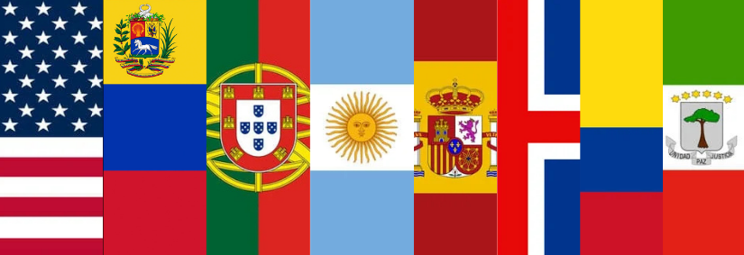

Libreye World nasce com a missão de eliminar barreiras linguísticas e aproximar pessoas, culturas e sociedades. Mais do que um simples tradutor, ele se apresenta como um grande projeto de comunicação universal, acessível em qualquer lugar e a qualquer momento. A plataforma traduz Libras, Braille, mensagens de texto e áudios em tempo real, garantindo que pessoas com diferentes formas de comunicação possam se expressar e compreender o mundo ao seu redor. Esse compromisso com a inclusão social é o pilar central da empresa, que busca oferecer ferramentas que ampliem o acesso à educação, ao convívio social e às oportunidades de vida. Com chat integrado, tecnologia de voz e câmera, o Libreye World já oferece interações completas, mas as ambições para o futuro são ainda maiores.
O futuro do Libreye World abre espaço para ideias revolucionárias, entre elas:
O Libreye World continuará crescendo, trazendo novidades que vão ampliar sua utilidade e acessibilidade:
O Libreye World não é apenas uma ferramenta: é uma ponte global que conecta vozes, sinais, palavras e sentimentos. Ao expandir suas funções e abraçar a diversidade da comunicação humana, a plataforma busca transformar o mundo em um lugar mais inclusivo, justo e unido, onde ninguém fica de fora por causa da língua ou de limitações físicas.
